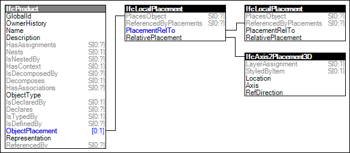

4.8.1.1 Product Local Placement
Product occurrences can be placed in 3D space relative to
where they are contained. Placement is defined by a
relative position (X, Y, Z coordinates), a horizontal
reference direction, and a vertical axis direction. At the
outermost level, relative directions are defined according
to representation context; for example, +X may point east,
+Y may point north, and +Z may point up.
Placement follows aggregation and containment relationships
as follows:
- at the outermost level, a site is globally
positioned according to latitude, longitude, and elevation;
- for spatial structures, positioning is
relative to aggregation. For example, a site may aggregate
multiple buildings, each building may aggregate multiple
building storeys, and each building storey may aggregate
multiple spaces;
- for building elements, positioning is
relative to the containing spatial structure. For example,
a building storey may contain slabs, walls, columns, and
beams;
- for aggregated parts, positioning is
relative to aggregation. For example, a staircase may
aggregate one or more stair flights;
- for feature elements, positioning is
relative to the affected building element. For example, an
opening element is positioned relative to the wall it
voids, which in turn is positioned relative to a building
storey;
- for fillings, positioning is relative to
the filled opening. For example, a door is positioned
relative to an opening which in turn is positioned relative
to a wall;
- for distribution ports, positioning is
relative to the containing distribution element. For
example, an air terminal may have a port connection for a
duct segment or fitting;
- for distribution elements, positioning is
relative to the containing spatial structure, however may be constrained by port connections. For example, a
electrical junction box may fill an opening within a wall,
and the junction box may contain ports for contained
outlets or switches; the placement of such connected
elements is contrained relative to connected port of the
junction box. As another example, an air terminal may fill
a ceiling covering which is placed relative to a space; the
placement of a connecting duct fitting may be constrained
relative to the air terminal.
If a containing spatial structure contains a grid, then
placement may also be based relative to grid coordinates.
In certain use cases, an absolute placement may be used by omiting the IfcObjectPlacement. In this case, the shape representation is defined within the world coordinate system.
Figure 58 illustrates an instance diagram.
 |
Figure 58 — Product Local Placement |
Examples:
 Link to this page
Link to this page